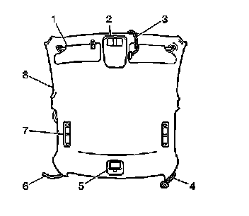

Headliner: Description and Operation
Headliner Description
Formed Headliner

Important: The headliner is only serviced as a complete assembly
The modular headliner (8) is a one-piece composite substrate that is covered with a foam cloth facing.
The electrical wiring harness (3, 4, 6) for the roof lighting (2, 5), the electrochromatic (UE1) inside rear view mirror (3),and the antenna module coaxial cable (6), attaches to the headliner by means of an adhesive glue bond.
The headliner is held up to the roof panel cardboard insulator by the use of six adhesive patches along with a single push-in plastic retainer located above the overhead console (2) The rear assist handles (7) fasteners, the front sunshades (1) fasteners and the rear courtesy lamp (5) fasteners also secure the headliner in place.
If the vehicle is equipped with a sunroof, there are four patches of Dual Lock(TM) material at the rear sides of the sunroof opening which add extra support for the headliner.